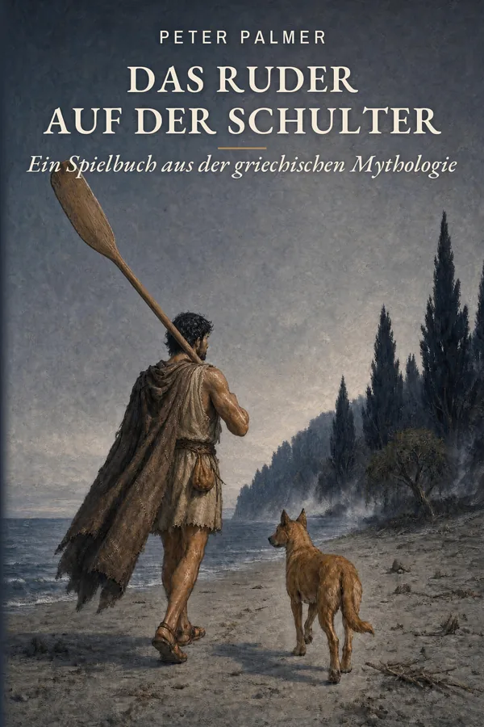

Griechische Mythologie · ab 10 Jahren
Das Ruder auf der Schulter
Ein Spielbuch aus der griechischen Mythologie
In der Nacht, in der der Mast des Schiffes bricht, packst du dein Ruder und wartest auf die Welle. Du erwachst an einem grauen Strand, unter einem Himmel, den du nicht kennst. Neben dir ist nur ein junger rotbrauner Hund, der zu wissen scheint, wohin es geht. Und wer dir begegnet, will früher oder später deinen Namen wissen.
Du heißt Anfialo. Du bist der Sohn des Eurylochos und der Enkel des Odysseus, und deine Familie hat mit dem Meer noch eine Rechnung offen. Um sie zu begleichen, musst du bei jedem Schritt wählen, welchen Weg du nimmst, wem du vertraust, wann du kämpfst und wann du fliehst und was du denen antwortest, die dich auf die Probe stellen.
Nur ein Weg führt bis ans Ende.